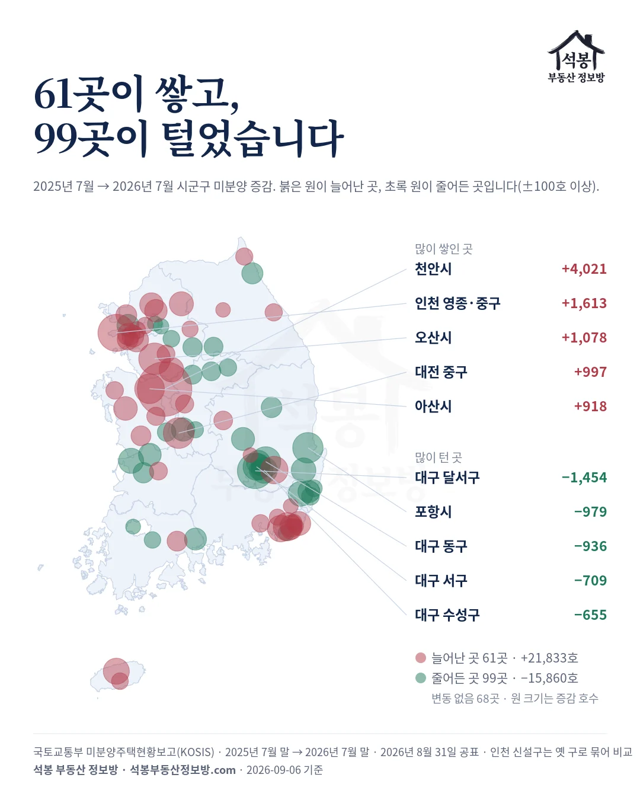
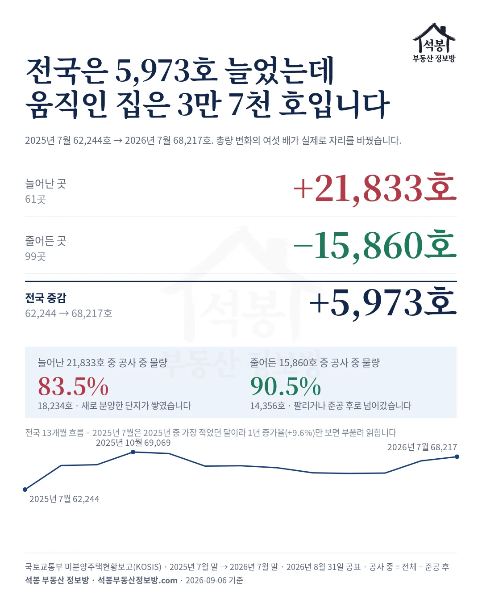
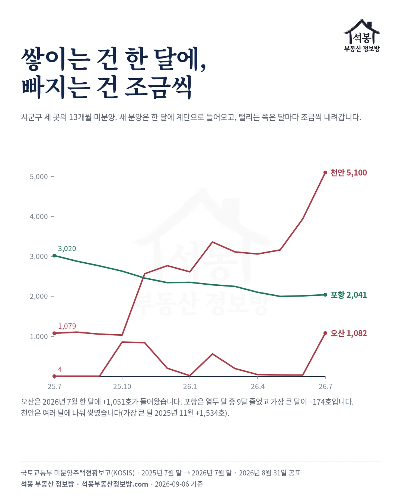
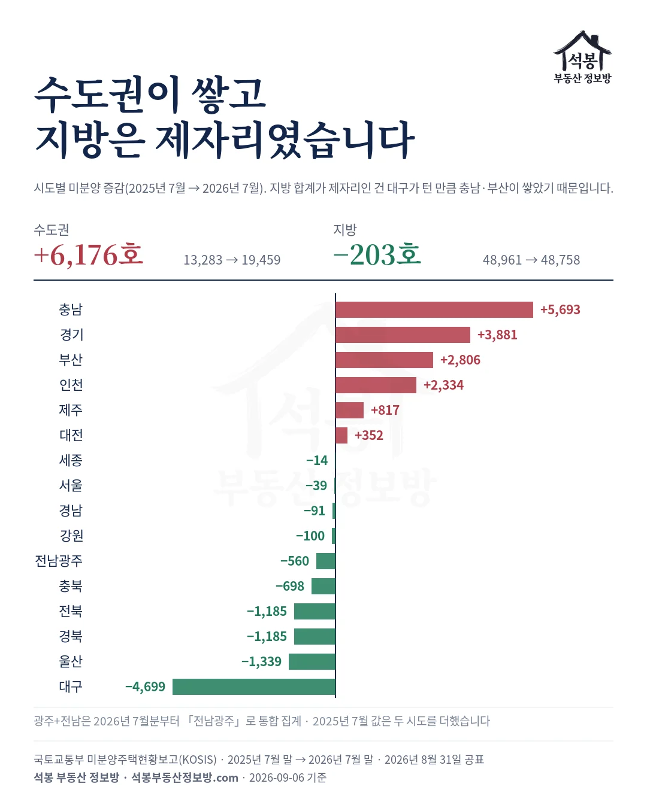

국토교통부가 2026년 8월 31일 공표한 7월 말 전국 미분양은 68,217호입니다. 1년 전인 2025년 7월 말 62,244호보다 5,973호, 9.6% 많습니다. 헤드라인은 여기서 끝나지만, 시군구 228곳으로 내려가면 다른 그림이 나옵니다.
61곳이 21,833호를 쌓았고, 99곳이 15,860호를 털었습니다. 68곳은 그대로였습니다. 전국 증감 5,973호의 여섯 배가 실제로 자리를 바꾼 것입니다. 1편 「미분양은 3년째 제자리인데, 다 지은 미분양은 4배가 됐습니다」에서 미분양의 성격이 바뀐 것을 봤다면, 이번에는 그 일이 어느 동네에서 일어났는지를 봅니다.
하나. 1년 전 그 달은 바닥이었습니다
비교 기준부터 짚고 갑니다. 2025년 7월 62,244호는 2025년 열두 달 중 가장 적었던 달입니다. 2025년 1월 72,624호에서 7월까지 줄었고, 10월 69,069호로 다시 올랐다가 2026년 7월 68,217호에 와 있습니다.
그래서 "1년 새 9.6% 늘었다"는 말은 시작점이 바닥이라 부풀려 읽힙니다. 2025년 1월과 비교하면 4,407호, 6.1% 적습니다. 이 글이 총량의 오르내림이 아니라 그 안의 자리바꿈을 보는 이유입니다.
가입하시면 지역 시장조사 보고서(약식)를 2회 무료로 요청하실 수 있습니다.
둘. 쌓은 곳과 턴 곳
시군구 228곳을 2025년 7월과 2026년 7월로 나란히 놓았습니다. 늘어난 곳 61, 줄어든 곳 99, 변동 없음 68곳입니다. 변동 없는 68곳 중 57곳은 두 달 다 미분양이 0이었습니다.
| 시군구 | 2025년 7월 | 2026년 7월 | 증감 | 그중 준공 후 |
|---|---|---|---|---|
| 충남 천안시 | 1,079호 | 5,100호 | +4,021호 | 312호 |
| 인천 영종·중구 | 35호 | 1,648호 | +1,613호 | 288호 |
| 경기 오산시 | 4호 | 1,082호 | +1,078호 | 0호 |
| 대전 중구 | 234호 | 1,231호 | +997호 | 167호 |
| 충남 아산시 | 1,219호 | 2,137호 | +918호 | 813호 |
| 대구 달서구 | 2,618호 | 1,164호 | −1,454호 | 892호 |
| 경북 포항시 | 3,020호 | 2,041호 | −979호 | 1,248호 |
| 대구 동구 | 1,427호 | 491호 | −936호 | 491호 |
| 대구 서구 | 774호 | 65호 | −709호 | 65호 |
| 대구 수성구 | 1,165호 | 510호 | −655호 | 510호 |
쌓은 쪽은 천안 한 곳이 증가분 21,833호의 18.4%입니다. 상위 다섯 곳을 더하면 39.5%입니다. 인천 영종은 2026년 7월 신설된 구라 옛 중구·동구와 묶어 비교했습니다.
턴 쪽은 대구입니다. 감소 상위 다섯 곳 중 네 곳이 대구의 구이고, 달서구 한 곳이 1,454호를 털었습니다. 대구 전체는 8,977호에서 4,278호로 절반 아래가 됐습니다.

셋. 쌓인 것도 공사 중, 빠진 것도 공사 중
늘어난 21,833호를 갈라 보면 18,234호, 83.5%가 공사 중 물량입니다. 새로 분양한 단지가 계약을 못 채운 몫이 그대로 쌓였다는 뜻입니다. 준공 후 미분양이 늘어난 몫은 3,599호입니다.
줄어든 15,860호도 14,356호, 90.5%가 공사 중 물량입니다. 팔렸거나, 공사가 끝나 준공 후로 넘어간 것입니다. 그 사이 준공 후 재고는 감소 시군구에서 1,504호밖에 줄지 않았고, 전국 준공 후는 27,057호에서 29,152호로 오히려 늘었습니다.
대구가 이 구조를 그대로 보여 줍니다. 1년 새 대구의 공사 중 미분양은 5,270호에서 797호로 줄었는데, 준공 후는 3,707호에서 3,481호로 거의 그대로입니다. 빠진 것은 공사 중 물량이고 다 지은 재고는 그 자리에 남았습니다.
그래서 대구에 남은 미분양 4,278호 중 3,481호, 81.4%가 준공 후입니다. 동구 491호, 서구 65호, 수성구 510호는 남은 미분양이 전부 준공 후입니다.

넷. 쌓이는 건 한 달에, 빠지는 건 조금씩
열세 달을 월별로 펴 보면 두 쪽의 모양이 다릅니다. 증가 상위 여섯 곳 중 다섯 곳은 한 달에 계단으로 올라왔습니다. 오산은 2026년 7월 한 달에 1,051호, 영종은 2026년 1월 한 달에 1,650호, 대전 중구는 2025년 8월 한 달에 1,099호가 들어왔습니다.
계단 하나는 대개 단지 하나입니다. 어느 단지인지는 미분양 통계에 안 나오지만, 오산에서는 8월 31일 256세대 무순위 청약이 열렸고, 아산에서는 8월 11일 620세대 분양에 619세대가 남았습니다(7월 통계 뒤의 일이라 8월분에 얹힐 물량입니다). 두 건은 9월 첫 주 무순위 청약과 8월 청약 결산에서 다뤘습니다.
천안은 예외입니다. 열세 달 중 여러 달에 나눠 쌓였고, 가장 큰 달인 2025년 11월에도 1,534호로 전체 증가분의 38.1%였습니다. 한 단지가 아니라 여러 단지가 잇달아 계약을 못 채운 모양입니다.
턴 쪽은 반대로 조금씩 내려갑니다. 포항은 열두 달 중 아홉 달이 감소였고 가장 많이 줄어든 달이 174호입니다. 대구 동구·수성구, 군산도 같은 모양이고, 달서구(2025년 12월 992호)와 대구 서구(2026년 5월 507호)만 한 달에 크게 빠졌습니다.

다섯. 수도권이 쌓고, 지방은 제자리
권역으로 묶으면 수도권 13,283호 → 19,459호(+6,176호, 46.5%), 지방 48,961호 → 48,758호(−203호)입니다. 1년 새 늘어난 5,973호는 사실상 수도권 몫이었습니다. 지방 합계가 제자리인 것은 대구가 턴 만큼 충남과 부산이 쌓았기 때문입니다.
시도로는 충남 +5,693호, 경기 +3,881호, 부산 +2,806호, 인천 +2,334호가 쌓았고, 대구 −4,699호, 울산 −1,339호, 전북 −1,185호, 경북 −1,185호가 털었습니다. 서울은 1,033호에서 994호로 39호 줄어 거의 움직이지 않았습니다. 충남 5,693호 중 4,021호가 천안, 918호가 아산입니다.

이 숫자를 어떻게 읽을까
전국 합계 한 줄은 두 개의 다른 일을 하나로 뭉갭니다. 한쪽에서는 새 분양 단지가 계약을 못 채워 한 달에 1,000호씩 쌓이고, 다른 쪽에서는 공사가 끝난 집이 조금씩 팔리거나 준공 후 재고로 굳습니다. 2026년 7월의 68,217호는 그 둘을 더한 숫자입니다.
그래서 다음 편의 질문이 남습니다. 쌓인 21,833호의 83.5%가 새 분양 물량이라면, 청약에서 미달난 단지는 그대로 미분양이 되는가입니다. 우리가 가진 청약 경쟁률 자료와 이 미분양 자료를 시군구 단위로 맞대 보겠습니다.
다 지은 재고가 어디에 얼마나 굳어 있는지는 1편에 따로 정리해 뒀습니다.
원자료: 국토교통부 「미분양주택현황보고」 시군구별·공사완료후 미분양(KOSIS), 2025년 7월 말과 2026년 7월 말 비교, 월별 13개월. 기준 2026년 7월 말(2026년 8월 31일 공표)
2026년 7월분부터 광주·전남은 「전남광주」로, 인천 서구는 서해구·검단구로, 중구·동구는 제물포구·영종구로 나뉘어 집계됩니다. 시도·시군구 비교는 옛 구역으로 묶어 계산했고, 그래서 시군구는 230곳이 아니라 228곳입니다
공사 중 미분양은 전체에서 준공 후를 뺀 값입니다. 한 달 계단은 열세 달 중 한 달의 변동이 전체 변동의 80% 이상인 경우로 봤습니다
⚠️미분양은 사업주체 신고 자료라 신고되지 않은 물량은 잡히지 않습니다. 투자 권유가 아닙니다.